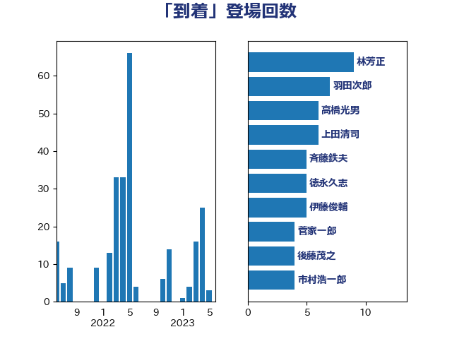

単語「到着」

| 林芳正 | 自由民主党 | 8 回 |
| 上田清司 | 国民民主党 | 7 回 |
| 塩田博昭 | 公明党 | 7 回 |
| 羽田次郎 | 立憲民主党 | 7 回 |
| 河野太郎 | 自由民主党 | 6 回 |
| 斉藤鉄夫 | 公明党 | 5 回 |
| 高橋光男 | 公明党 | 5 回 |
| 大家敏志 | 自由民主党 | 4 回 |
| 室井邦彦 | 日本維新の会 | 4 回 |
| 市村浩一郎 | 日本維新の会 | 4 回 |
| 後藤茂之 | 自由民主党 | 4 回 |
| 菅家一郎 | 自由民主党 | 4 回 |
| 青木愛 | 立憲民主党 | 4 回 |
| 岸田文雄 | 自由民主党 | 3 回 |
| 東徹 | 日本維新の会 | 3 回 |
| 牧山ひろえ | 立憲民主党 | 3 回 |
| 穀田恵二 | 日本共産党 | 3 回 |
| 紙智子 | 日本共産党 | 3 回 |
| 赤羽一嘉 | 公明党 | 3 回 |
| 串田誠一 | 日本維新の会 | 2 回 |
| 伊藤俊輔 | 立憲民主党 | 2 回 |
| 城井崇 | 立憲民主党 | 2 回 |
| 小沢雅仁 | 立憲民主党 | 2 回 |
| 山本博司 | 公明党 | 2 回 |
| 本田太郎 | 自由民主党 | 2 回 |
| 橋本聖子 | 無所属 | 2 回 |
| 田島麻衣子 | 立憲民主党 | 2 回 |
| 西村康稔 | 自由民主党 | 2 回 |
| 赤澤亮正 | 自由民主党 | 2 回 |
| 長妻昭 | 立憲民主党 | 2 回 |
| 高木かおり | 日本維新の会 | 2 回 |
| こやり隆史 | 自由民主党 | 1 回 |
| 上川陽子 | 自由民主党 | 1 回 |
| 中島克仁 | 立憲民主党 | 1 回 |
| 中曽根康隆 | 自由民主党 | 1 回 |
| 井坂信彦 | 立憲民主党 | 1 回 |
| 佐藤英道 | 公明党 | 1 回 |
| 北神圭朗 | 無所属 | 1 回 |
| 古屋範子 | 公明党 | 1 回 |
| 古川禎久 | 自由民主党 | 1 回 |
| 吉川元 | 立憲民主党 | 1 回 |
| 吉田統彦 | 立憲民主党 | 1 回 |
| 吉良よし子 | 日本共産党 | 1 回 |
| 城内実 | 自由民主党 | 1 回 |
| 堀内詔子 | 自由民主党 | 1 回 |
| 堤かなめ | 立憲民主党 | 1 回 |
| 大西英男 | 自由民主党 | 1 回 |
| 宮本岳志 | 日本共産党 | 1 回 |
| 宮本徹 | 日本共産党 | 1 回 |
| 小寺裕雄 | 自由民主党 | 1 回 |
| 尾身朝子 | 自由民主党 | 1 回 |
| 山際大志郎 | 自由民主党 | 1 回 |
| 岡田克也 | 立憲民主党 | 1 回 |
| 岩谷良平 | 日本維新の会 | 1 回 |
| 岸信夫 | 自由民主党 | 1 回 |
| 岸真紀子 | 立憲民主党 | 1 回 |
| 平木大作 | 公明党 | 1 回 |
| 木原誠二 | 自由民主党 | 1 回 |
| 末松義規 | 立憲民主党 | 1 回 |
| 杉尾秀哉 | 立憲民主党 | 1 回 |
| 松野博一 | 自由民主党 | 1 回 |
| 梅村みずほ | 日本維新の会 | 1 回 |
| 武田良太 | 自由民主党 | 1 回 |
| 浅野哲 | 国民民主党 | 1 回 |
| 浮島智子 | 公明党 | 1 回 |
| 田村憲久 | 自由民主党 | 1 回 |
| 田畑裕明 | 自由民主党 | 1 回 |
| 石井正弘 | 自由民主党 | 1 回 |
| 石川博崇 | 公明党 | 1 回 |
| 石川昭政 | 自由民主党 | 1 回 |
| 石田昌宏 | 自由民主党 | 1 回 |
| 福山哲郎 | 立憲民主党 | 1 回 |
| 緑川貴士 | 立憲民主党 | 1 回 |
| 美延映夫 | 日本維新の会 | 1 回 |
| 芳賀道也 | 国民民主党 | 1 回 |
| 若松謙維 | 公明党 | 1 回 |
| 菅義偉 | 自由民主党 | 1 回 |
| 萩生田光一 | 自由民主党 | 1 回 |
| 藤井比早之 | 自由民主党 | 1 回 |
| 赤嶺政賢 | 日本共産党 | 1 回 |
| 足立康史 | 日本維新の会 | 1 回 |
| 野田佳彦 | 立憲民主党 | 1 回 |
| 鈴木敦 | 国民民主党 | 1 回 |
| 長峯誠 | 自由民主党 | 1 回 |
| 長浜博行 | 無所属 | 1 回 |
| 青柳仁士 | 日本維新の会 | 1 回 |